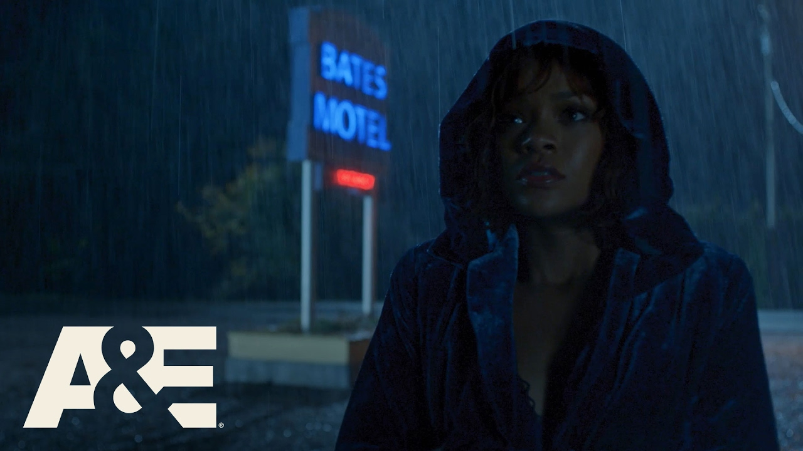
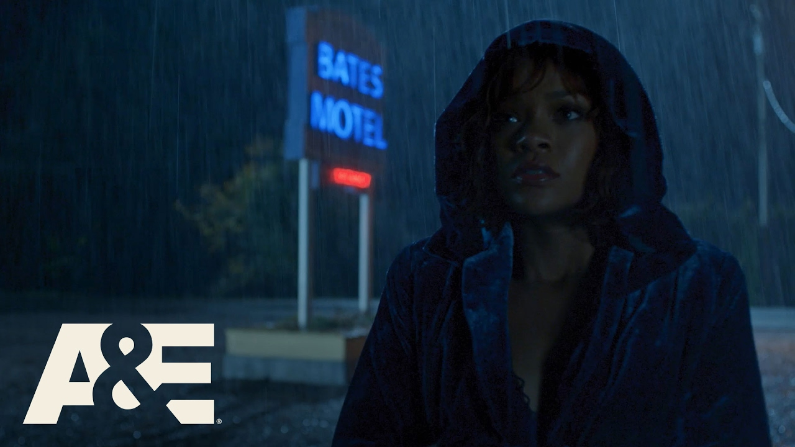

|
|
|---|
„ბეიტსის მოტელი“ ალფრედ ჰიჩკოკის 1960 წლის „ფსიქოს“ თანამედროვე პრიკველია, ხოლო „ფსიქო“ დაფუძნებულია რობერტ ბლოხის 1959 წლის ამავე სახელწოდების რომანზე. „ჩვენ გვაქვს 12 თავისუფალი ადგილი, 12 კაბინა“. „შემოიარეთ, დაისვენეთ, შხაპი მიიღეთ“. |
| პერსონაჟები |
|---|
| მედია |
|---|
|
Bates Motel Together Forever (ft. Rihanna as Marion Crane) Final Season Premieres Feb 20 A&E |

 Final Season Premieres Feb 20 A&E (13 KB)") 
